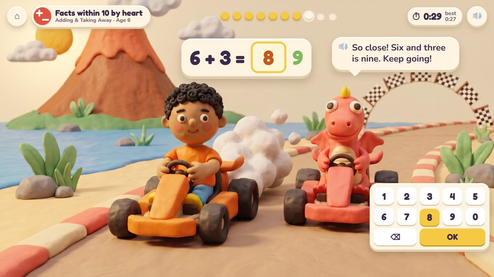
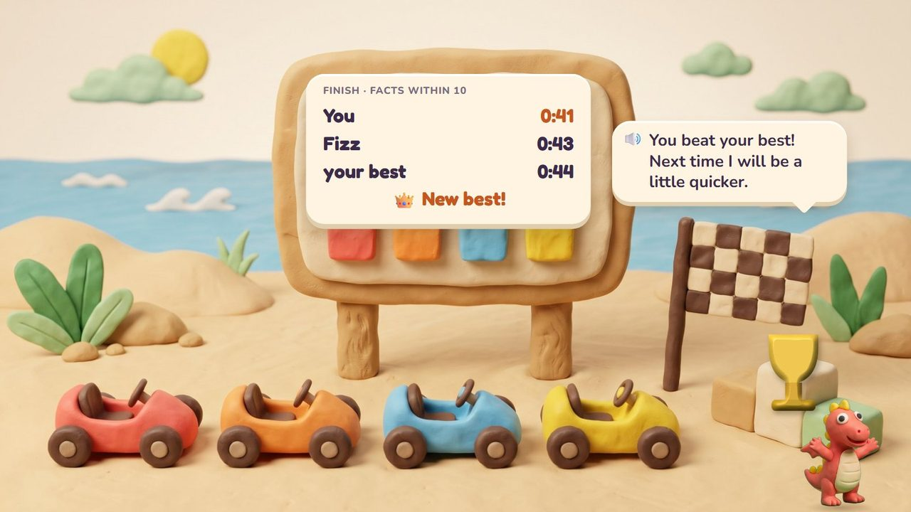
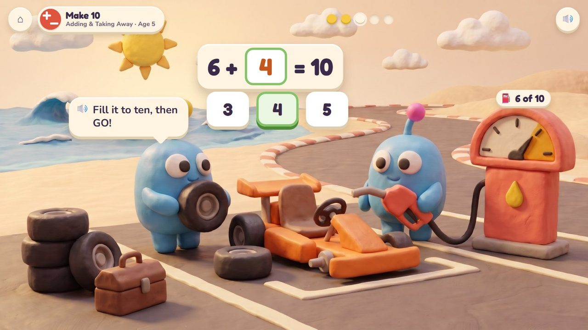
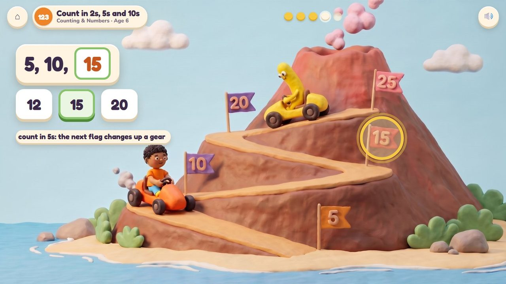
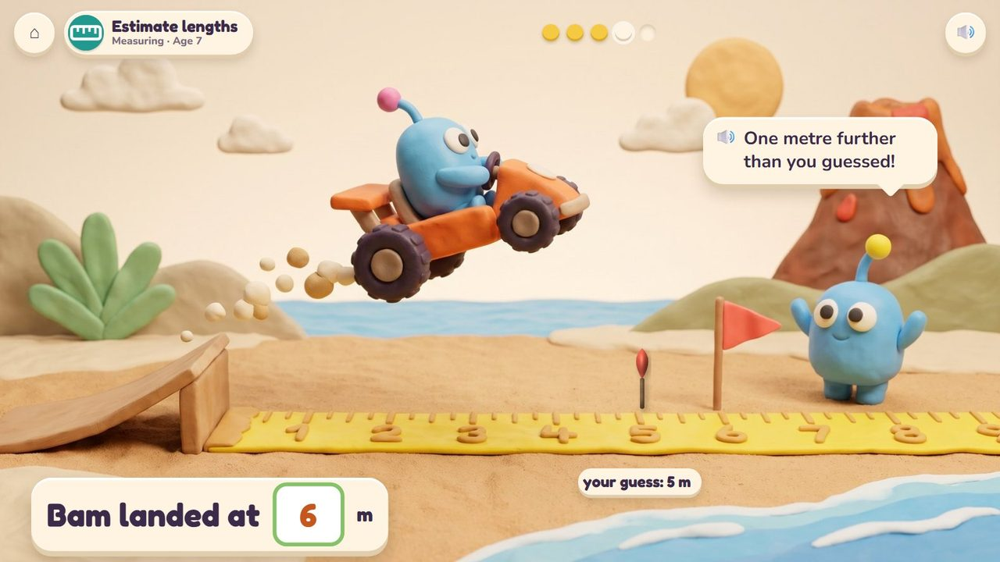
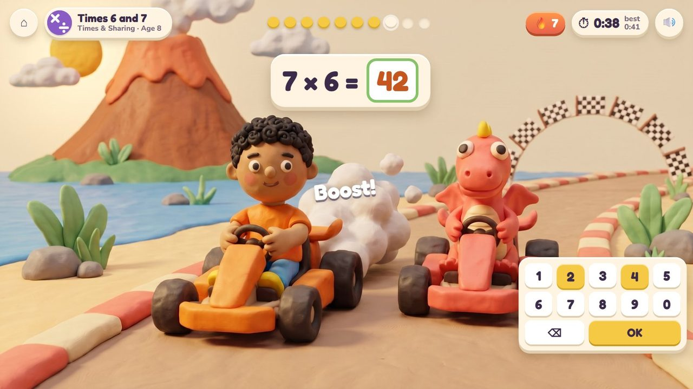

Kart Cup
Race a friend round the bay: the maths drives your kart.
42 lessons (14 taught here first, the rest practised here) in 7 topics:
Counting & NumbersAdding & Taking AwayTimes & SharingPlace ValueFractions & DecimalsMeasuringPatterns & Graphs

The game
Your four races in one game. In the boost race every right answer on the number pad gives your kart a puff of speed. At the pit stop the twins fix the kart: fill the tank to 10, change the wheels. On the Volcano Hill Climb each flag is the next number when counting in 2s, 5s or 10s. At the ramp jump the kart flies and lands beside a tape measure: guess first, then read it. The friend in the other kart drives at the pace of your own best, so races are always close, and the friend is kind when you lose. The lesson picks the race.
Hands-on
Type on the number pad; tap a fuel can; tap the next flag; set the ramp and read the tape.
The end of a round
The finish: your time against your best on the results board, and a cup for a new best.
How it plays
A storyboard of the game in one lesson, drawn from the app's own clay pictures.
1The boost race
Facts within 10, age 6: every right answer is a boost; your time and your best on top.

2A miss
The answer shows at once and the kart keeps going.
🔊 “So close! Six and three is nine. Keep going!”

3The finish
The results board: a new best, and a cup.
🔊 “You beat your best! Next time I will be a little quicker.”

4The pit stop
Make 10, age 5: the tank has 6; tap the can with 4.
🔊 “Fill it to ten, then GO!”

5The hill climb
Count in 5s, age 6: tap the next flag, 15, to change up a gear.

6The ramp jump
Estimate lengths, age 7: you guessed 5 m; Bam landed at 6 m.
🔊 “One metre further than you guessed!”
The quick round (from age 6)
The boost race is the quick round: ten facts at 6 and 7. From 8 it is the quick facts warm-up, taking turns with Volcano Pop. Ten questions at 6-7, a 60-second round from 8; your time and your best on screen; only right answers count; a miss shows the answer and comes back later. No clock under 6.
The same game, other lessons and ages
The badge at the top left says the topic, the lesson and the age.

7Times 6 and 7 · age 8
From age 8 the boost race is the quick facts warm-up, taking turns with Volcano Pop: 7 × 6 = 42.
From age 5 to 10
| Age 5Kindergarten | Pit stop: make 10 with fuel; the boost race with facts within 5; whose kart jumped further? |
| Age 6Grade 1 | Hill climb in 2s, 5s and 10s; the boost race with facts within 10 and doubles; order three jumps, measure with blocks. |
| Age 7Grade 2 | Hill climb in 5s, 10s and 100s; the boost race with facts within 20; ramp jumps in metres: guess, measure, how much further, line plots. |
| Age 8Grade 3 | The boost race only: the quick facts warm-up (times tables), taking turns with Volcano Pop. |
| Age 9Grade 4 | The boost race with the facts of the year (multiples, times 10 and 100). |
| Age 10Grade 5 | The boost race with the facts of the year (powers of ten, fractions of numbers). |
What changes from lesson to lesson
The race
boost (facts), pit stop (make 10, fill the tank), hill climb (count in steps), ramp jump (measure)
The rival
a friend at the pace of your best; a new best makes the friend a little quicker
Help
a miss shows the answer and the kart keeps going; no clock under 6
How you answer
the number pad, or one tap (a fuel can, a flag, a place on the tape)
Its 42 lessons
Age by age they are on the full list; here grouped by topic (the first activity named teaches a lesson, the others practise it).
Counting & Numbers 2
- Count in 2s, 5s and 10s
extraKart Cup · Number Lift - Count in 5s, 10s and 100s
2.NBT.2Kart Cup · Number Lift
Adding & Taking Away 6
- Make 10
K.OA.4Poke Pals · Kart Cup · Volcano Pop - Quick adding within 5
K.OA.5Volcano Pop · Kart Cup · Peek-a-Peep - Quick taking away within 5
K.OA.5Volcano Pop · Kart Cup - Doubles and near doubles
1.OA.6Raft Rescue · Volcano Pop · Kart Cup - Facts within 10 by heart
1.OA.6Volcano Pop · Kart Cup - Facts within 20 by heart
2.OA.2Volcano Pop · Kart Cup
Times & Sharing 14
- Times 2, 5 and 10
3.OA.7Practice screens · Volcano Pop · Kart Cup - Times 3 and 4
3.OA.7Practice screens · Volcano Pop · Kart Cup - Times 6 and 7
3.OA.7Practice screens · Volcano Pop · Kart Cup - Times 8 and 9
3.OA.7Practice screens · Volcano Pop · Kart Cup - Times 0 and 1
3.OA.5Practice screens · Volcano Pop · Kart Cup - Turn-around facts
3.OA.5Practice screens · Volcano Pop · Kart Cup - Division facts
3.OA.7Practice screens · Volcano Pop · Kart Cup - Times and sharing are family
3.OA.6Practice screens · Volcano Pop · Kart Cup - Missing factors
3.OA.4Practice screens · Volcano Pop · Kart Cup - Patterns in the times table
3.OA.9Practice screens · Volcano Pop · Kart Cup - Times tens: 3 x 40
3.NBT.3Practice screens · Volcano Pop · Kart Cup - Factors
4.OA.4Practice screens · Volcano Pop · Kart Cup - Multiples
4.OA.4Practice screens · Volcano Pop · Kart Cup - Times 10, 100 and 1000
4.NBT.1Practice screens · Volcano Pop · Kart Cup
Place Value 2
- Powers of ten
5.NBT.2Practice screens · Volcano Pop · Kart Cup - Times and divide by 10, 100, 1000
5.NBT.2Practice screens · Volcano Pop · Kart Cup
Fractions & Decimals 2
- A fraction times a whole number
4.NF.4Practice screens · Volcano Pop · Kart Cup - A fraction of a number
5.NF.4Practice screens · Volcano Pop · Kart Cup
Measuring 14
- What can we measure?
K.MD.1Boat Load · Seesaw Twins · Kart Cup - Compare lengths
K.MD.2Kart Cup · Critter Maker - Compare what it holds
K.MD.2Kart Cup · Island Hopper - Order three by length
1.MD.1Kart Cup · Critter Maker - Compare using a third thing
1.MD.1Kart Cup - Measure with blocks
1.MD.2Kart Cup - Measure with a ruler
2.MD.1Kart Cup - Choose the tool
2.MD.1Kart Cup · Boat Load - Measure with two units
2.MD.2Kart Cup - Estimate lengths
2.MD.3Kart Cup - How much longer?
2.MD.4Kart Cup · Number Lift - Length stories
2.MD.5Kart Cup - Numbers on a number line
2.MD.6Parcel Post · Kart Cup · Number Lift - Change big units to small
4.MD.1Practice screens · Volcano Pop · Kart Cup
Patterns & Graphs 2
- Line plots
2.MD.9Kart Cup - Brackets first
5.OA.1Practice screens · Volcano Pop · Kart Cup
Questions
- Kart Cup takes turns with Volcano Pop as the daily warm-up: does that feel right?
- Which friend should drive the other kart: always Fizz, or a different friend for each race?
- Anything in the storyboard to change (say the frame number)?